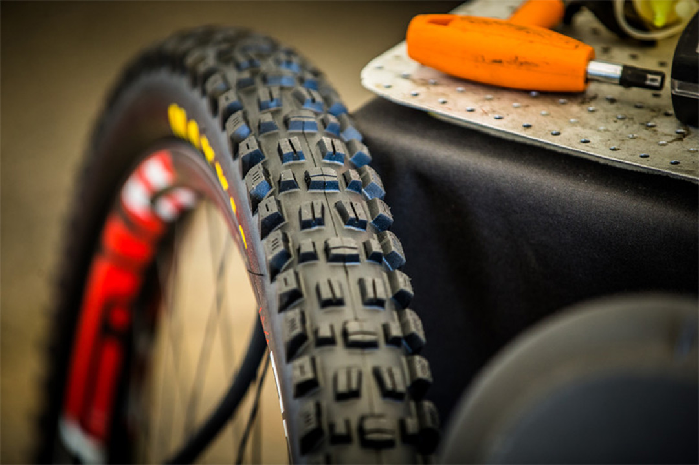

Велосипедна шина — пружна гумова оболонка з металевим або полімерним кордом, встановлена на обід колеса. Забезпечує безпосередній контакт транспортного засобу з дорожнім полотном та поглинання вібрацій, викликаних нерівностями дорожнього покриття. Зазвичай накачується повітрям, що дозволяє регулювати пружність шини та розмір плями контакту.
